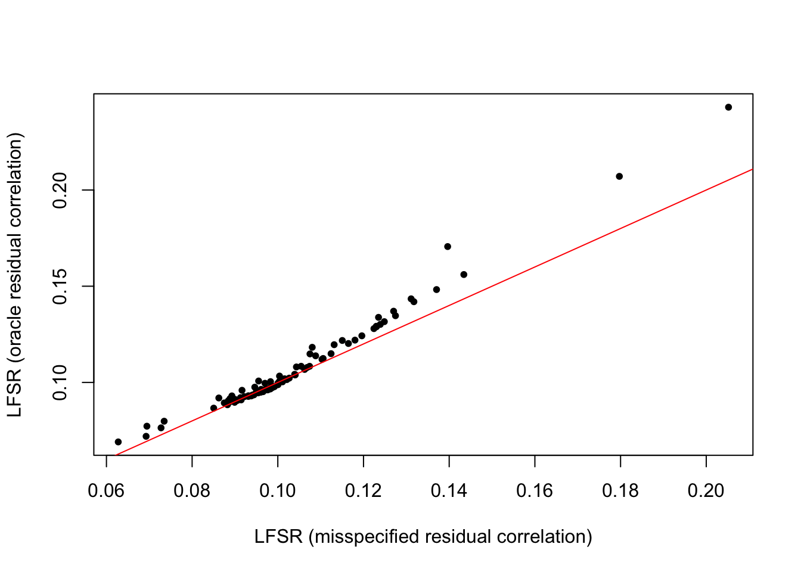

mashR_extension
Lifan Liang
2026-01-20
Last updated: 2026-01-21
Checks: 7 0
Knit directory: eQTL_methods/
This reproducible R Markdown analysis was created with workflowr (version 1.7.2). The Checks tab describes the reproducibility checks that were applied when the results were created. The Past versions tab lists the development history.
Great! Since the R Markdown file has been committed to the Git repository, you know the exact version of the code that produced these results.
Great job! The global environment was empty. Objects defined in the global environment can affect the analysis in your R Markdown file in unknown ways. For reproduciblity it’s best to always run the code in an empty environment.
The command set.seed(20250106) was run prior to running
the code in the R Markdown file. Setting a seed ensures that any results
that rely on randomness, e.g. subsampling or permutations, are
reproducible.
Great job! Recording the operating system, R version, and package versions is critical for reproducibility.
Nice! There were no cached chunks for this analysis, so you can be confident that you successfully produced the results during this run.
Great job! Using relative paths to the files within your workflowr project makes it easier to run your code on other machines.
Great! You are using Git for version control. Tracking code development and connecting the code version to the results is critical for reproducibility.
The results in this page were generated with repository version 03517e0. See the Past versions tab to see a history of the changes made to the R Markdown and HTML files.
Note that you need to be careful to ensure that all relevant files for
the analysis have been committed to Git prior to generating the results
(you can use wflow_publish or
wflow_git_commit). workflowr only checks the R Markdown
file, but you know if there are other scripts or data files that it
depends on. Below is the status of the Git repository when the results
were generated:
Ignored files:
Ignored: .DS_Store
Ignored: .RData
Ignored: .Rhistory
Untracked files:
Untracked: data/neuron_stim_genotype_chr9_2e6-3e6.rds
Untracked: data/susie_code.R
Untracked: data/susie_simulation.zip
Untracked: test_matrixeqtl.R
Unstaged changes:
Modified: data/mixedmodel_res_phi0.02.csv
Modified: data/mixedmodel_res_phi0.03.csv
Modified: data/mixedmodel_res_phi0.04.csv
Modified: data/mixedmodel_res_phi0.05.csv
Modified: data/scalability_snp.csv
Modified: data/twostep_res_phi0.02.csv
Modified: data/twostep_res_phi0.03.csv
Modified: data/twostep_res_phi0.04.csv
Modified: data/twostep_res_phi0.05.csv
Note that any generated files, e.g. HTML, png, CSS, etc., are not included in this status report because it is ok for generated content to have uncommitted changes.
These are the previous versions of the repository in which changes were
made to the R Markdown (analysis/mashR_extension.Rmd) and
HTML (docs/mashR_extension.html) files. If you’ve
configured a remote Git repository (see ?wflow_git_remote),
click on the hyperlinks in the table below to view the files as they
were in that past version.
| File | Version | Author | Date | Message |
|---|---|---|---|---|
| Rmd | 03517e0 | Lifan Liang | 2026-01-21 | wflow_publish("analysis") |
Simulation experiment
Data generation
We generate a dataset for eQTL mapping seperately for two different contexts according to this scenario:
\[ \beta \sim MVN(0,\begin{bmatrix} 1 & \rho_G \\ \rho_G & 1 \end{bmatrix} \cdot \sigma_G^2) \] \[ \epsilon \sim MVN(0, \begin{bmatrix} 1 & \rho_e \\ \rho_e & 1 \end{bmatrix} \sigma_e^2) \] \[ Y_1 = G \beta_1 + \epsilon_1 \]
\[ Y_2 = G \beta_2 + \epsilon_2 \]
We repeat the procedure above for 100 times and obtained 100 estimated genetic effects from the two contexts.
library(MASS)
sim_marker_regression <- function(n = 100, m = 10, sigma_G2 = 0.1, sigma_e2 = 1.0, rho_G = 0.3, rho_e=0.9) {
# 1. Simulate Design Matrix G (n individuals x m markers)
G <- matrix(rnorm(n * m), nrow = n, ncol = m)
# 2. Generate True Betas (Genetic Effects)
# Correlation between trait 1 and trait 2 is 0.5 as per your prompt
U <- matrix(c(1, rho_G, rho_G, 1), nrow = 2)
cov_beta <- U * sigma_G2
betas_true <- mvrnorm(n = m, mu = c(0, 0), Sigma = cov_beta)
colnames(betas_true) <- c("Beta1_True", "Beta2_True")
# 3. Generate Residuals (Environmental Effects)
cov_epsilon <- matrix(c(1, rho_e, rho_e, 1), nrow = 2) * sigma_e2
eps_all <- mvrnorm(n = n * m, mu = c(0, 0), Sigma = cov_epsilon)
# Reshape residuals into n x m matrices
eps1_mat <- matrix(eps_all[, 1], nrow = n, ncol = m)
eps2_mat <- matrix(eps_all[, 2], nrow = n, ncol = m)
# 4. Generate Phenotype Matrices Y1 and Y2 (n x m)
Y1 <- sweep(G, 2, betas_true[, 1], `*`) + eps1_mat
Y2 <- sweep(G, 2, betas_true[, 2], `*`) + eps2_mat
# 5. Regression (OLS estimation)
# Using the fast matrix method: beta_hat = (G'G)^-1 G'Y
beta1_hat <- colSums(G * Y1) / colSums(G^2)
beta2_hat <- colSums(G * Y2) / colSums(G^2)
# 6. Consolidate Results
results <- data.frame(
marker_id = 1:m,
beta1_true = betas_true[, 1],
beta1_est = beta1_hat,
beta2_true = betas_true[, 2],
beta2_est = beta2_hat
)
return(results)
}Impact of Residual Correlation on Estimated Genetic effect sharing.
When \(\rho_e\) is low, the sharing of genetic effects are dampen because of measurement error. As \(\rho_e\) increased, the sharing of genetic effects were inflated. It would be more obvious with smaller sample size

LFSR estimation from simulated data
We approximated LFSR with the Bayesian probability from the null model where \(\beta_1\) and \(\beta_2\) are independent (Z=0).
\[ Z \sim Bernoulli(1-\pi_0) \]
\[ Z=0: \begin{bmatrix} \beta_1 \\ \beta_2 \end{bmatrix} \sim MVN(0, I \cdot \sigma_G^2 + \begin{bmatrix} 1 & \rho_e \\ \rho_e & 1 \end{bmatrix} \dfrac{\sigma_e^2}{n}) \]
\[ Z=1: \begin{bmatrix} \beta_1 \\ \beta_2 \end{bmatrix} \sim MVN(0, \begin{bmatrix} 1 & \rho_G \\ \rho_G & 1 \end{bmatrix} \cdot \sigma_G^2 + \begin{bmatrix} 1 & \rho_e \\ \rho_e & 1 \end{bmatrix} \dfrac{\sigma_e^2}{n}) \]
The posterior that \(beta_1\) and \(beta_2\) are indepedent can computed as:
\[ Pr(Z=0|\beta_1,\beta_2) = \dfrac{\pi_0Pr(\beta_1,\beta_2|Z=0)}{\pi_0Pr(\beta_1,\beta_2|Z=0) + (1-\pi_0)Pr(\beta_1,\beta_2|Z=1)} \]
sigma_G2 <- 0.2
sigma_e2 <- 1
rho_e <- 0.9
rho_G <- 0.0
n <- 30
pi0 <- 0.1
sim.data <- sim_marker_regression(n=n, m=100, rho_e = rho_e, rho_G=rho_G, sigma_G2=sigma_G2, sigma_e2=sigma_e2)
library(mvtnorm)
get_lfsr <- function(beta1, beta2, sigma_G2, sigma_e2, rho_e, rho_G, n, pi0) {
null_covar <- matrix(c(sigma_e2/n+sigma_G2,
rho_e*sigma_e2/n,
rho_e*sigma_e2/n,
sigma_e2/n+sigma_G2),2,2)
alt_covar <- matrix(c(sigma_e2/n+sigma_G2,
rho_e*sigma_e2/n+rho_G*sigma_G2,
rho_e*sigma_e2/n+rho_G*sigma_G2,
sigma_e2/n+sigma_G2),2,2)
null_lik <- dmvnorm(cbind(beta1, beta2), sigma=null_covar)
alt_lik <- dmvnorm(cbind(beta1, beta2), sigma=alt_covar)
pi0 * null_lik / (pi0*null_lik + (1-pi0)*alt_lik)
}
lfsr.true <- get_lfsr(sim.data$beta1_est, sim.data$beta2_est,
sigma_G2=sigma_G2,
sigma_e2=sigma_e2,
rho_e=rho_e,
rho_G=0.2,
n=n, pi0=pi0)
lfsr.false <- get_lfsr(sim.data$beta1_est, sim.data$beta2_est,
sigma_G2=sigma_G2,
sigma_e2=sigma_e2,
rho_e=0.2,
rho_G=0.2,
n=n, pi0=pi0)
plot(y=lfsr.true, x=lfsr.false,pch=20,
xlab = "LFSR (misspecified residual correlation)",
ylab = "LFSR (oracle residual correlation)")
lines(c(0,1),c(0,1),col="red")
In this setting of 30 samples, the two contexts have residual correlation of 0.9 and zero genetic correlation. LFSR is slightly smaller when residual correlation is set to 0.2.
sessionInfo()R version 4.1.2 (2021-11-01)
Platform: x86_64-apple-darwin17.0 (64-bit)
Running under: macOS Big Sur 10.16
Matrix products: default
BLAS: /Library/Frameworks/R.framework/Versions/4.1/Resources/lib/libRblas.0.dylib
LAPACK: /Library/Frameworks/R.framework/Versions/4.1/Resources/lib/libRlapack.dylib
locale:
[1] en_US.UTF-8/en_US.UTF-8/en_US.UTF-8/C/en_US.UTF-8/en_US.UTF-8
attached base packages:
[1] stats graphics grDevices utils datasets methods base
other attached packages:
[1] mvtnorm_1.1-3 ggplot2_4.0.1 MASS_7.3-54 workflowr_1.7.2
loaded via a namespace (and not attached):
[1] Rcpp_1.0.10 RColorBrewer_1.1-3 compiler_4.1.2 pillar_1.11.1
[5] bslib_0.3.1 later_1.3.1 git2r_0.32.0 jquerylib_0.1.4
[9] tools_4.1.2 getPass_0.2-4 digest_0.6.31 gtable_0.3.6
[13] jsonlite_2.0.0 evaluate_1.0.5 lifecycle_1.0.4 tibble_3.3.0
[17] pkgconfig_2.0.3 rlang_1.1.6 cli_3.6.5 rstudioapi_0.17.1
[21] yaml_2.3.11 xfun_0.54 fastmap_1.1.1 withr_3.0.2
[25] dplyr_1.1.2 httr_1.4.7 stringr_1.6.0 knitr_1.50
[29] generics_0.1.4 fs_1.6.2 vctrs_0.6.5 sass_0.4.6
[33] tidyselect_1.2.1 grid_4.1.2 rprojroot_2.1.1 glue_1.8.0
[37] R6_2.6.1 processx_3.8.6 otel_0.2.0 rmarkdown_2.30
[41] farver_2.1.1 callr_3.7.6 magrittr_2.0.4 whisker_0.4.1
[45] scales_1.4.0 ps_1.9.1 promises_1.5.0 htmltools_0.5.9
[49] dichromat_2.0-0.1 httpuv_1.6.10 labeling_0.4.3 S7_0.2.1
[53] stringi_1.7.12